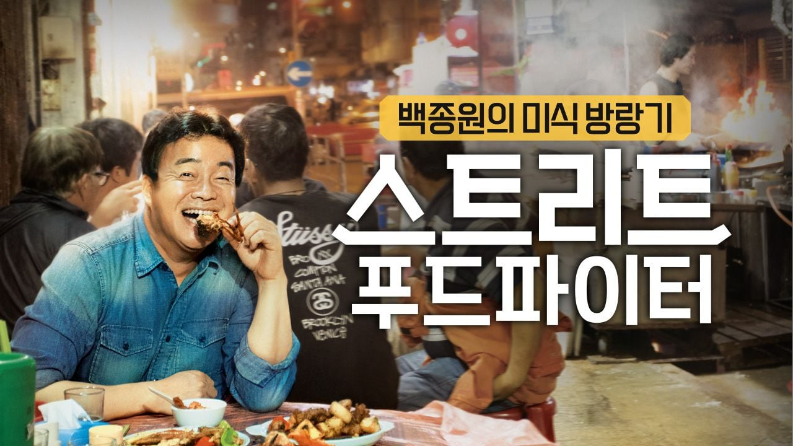

그건 스트리트 푸드파이터
해외가서 그나라 음식 먹는건데
꺼드럭 거려도 해외음식에 대한 지식이 많다 정도로 생각되서 방송은 참 괜찮았음
이 음식 내가 만든거에유 X
이 음식 내가 원조에유 X
여기 가게는 이 메뉴 빼유 X
메뉴에서 이 재료 빼유 X
레시피가 뭐에유 X
내음식엔 내가만든 레시피넣을거에유 X
현재 논란되는 모든 문제점들이 저방송엔 없었음
하지만 이후부터 ....
저거도 틀린 지식 많다던데 개드립에서 봄